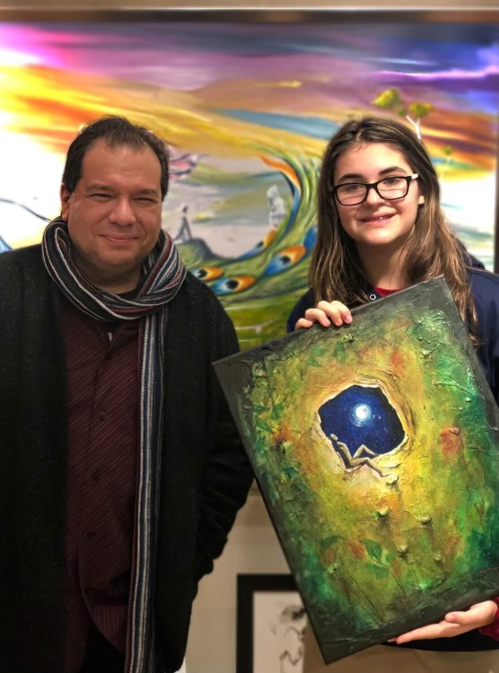
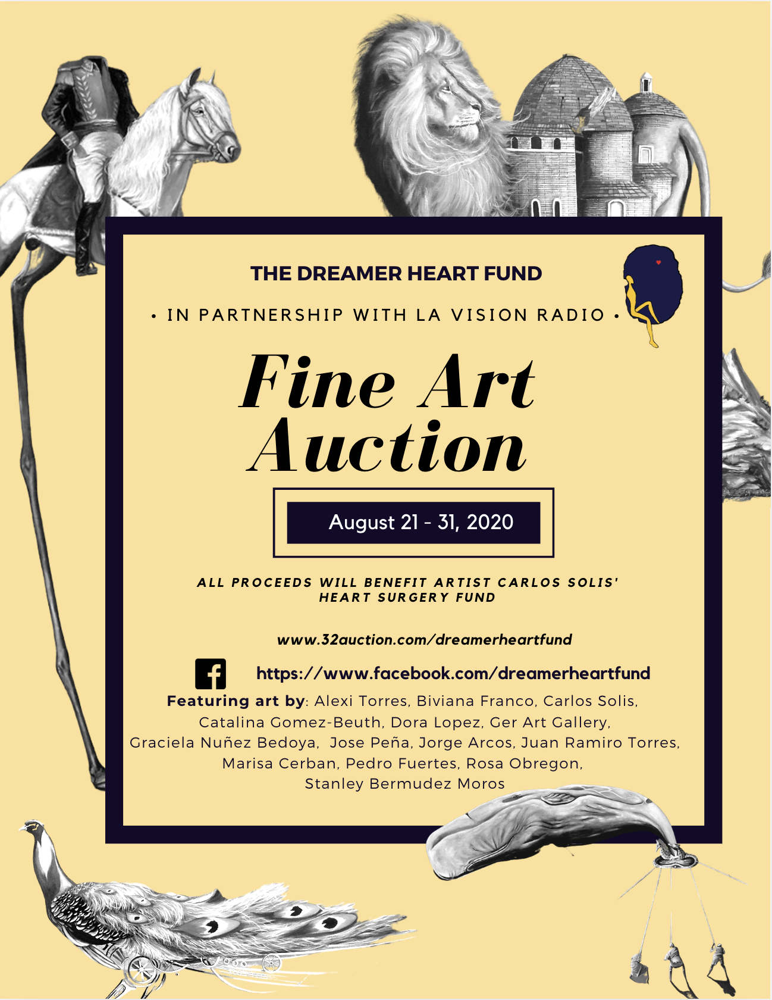

The Dreamer Heart Fund
The Dreamer :
Carlos Solis
How the story of one artist's impact turned into something more
The Orgins
Born from one Dreamer, built for many.
The Dreamer Heart Fund was founded to support artist Carlos Solis though his recover after his health crisis. Solis is a Venezuelan-born surrealist artist, designer, and curator whose life and work embody the intersection of imagination, culture, and resilience. The fund was inspired by his series “The Dreamer”, which reflects on the power of the imagination and the beauty of human existence.
Born in 1966 in Maracaibo, Venezuela, Carlos showed an active imagination and developing creative ability from an early age. He began painting murals and portraits as a teenager, laying the foundation for a lifelong passion. In 1989, he moved to the United States, eventually settling in Atlanta, where he worked as a freelance artist and designer. By the mid-1990s, he had begun painting in a surrealist style, drawing on imagery from nature, fantasy, spiritual themes, and conceptual art.
“In the infinite world of my imagination, I try to convey and stimulate the mythical and spiritual elements of visual expression,” Carlos says. “My passion in painting started with the magnificent elements of nature—fauna and flora—and their natural beauty… For example: the majestic animals of the Amazon or Indians from Venezuela (Guajiros). However, I always try to expand my work to other areas of reality and with a spiritual meaning… to explore and show the ranges of styles and techniques by creating the most beautiful and delicate components of life to the most complex and strange art.”
Carlos’s work references the techniques of many old masters while continually finding fresh imagery within surrealism. His experiences across South and North America have deeply shaped his vision: “Fortunately, I have the pleasure and the opportunity to experience the richness of many cultures in South and North America, which allow me to expand my imagination even more… My work reflects the distinctness of my artistic perception from those experiences, which provides vivid colors and physical details in order to make something visually pleasing, grotesque or unfamiliar to look at.” His art also seeks to raise awareness about our delicate habitat and the lack of knowledge around cultural and racial diversity in South America.
Beyond his studio practice, Carlos is a curator and community builder. He is the founder of the Latin American artist collective Contrapunto, and has curated significant exhibitions including Blackness in Latin America, which premiered in New York and traveled to Chicago, New Mexico, and Atlanta, and Surrealist Apparatus, which toured the East Coast of the United States. After studying Graphic Design at the College of DuPage in Illinois, he moved to Atlanta in 2006 and, a few years later, dedicated his life to his fine art career. The idea for a Latin American artist collective took shape in 2008, reflecting his long-standing commitment to supporting fellow artists.
The Dreamer Heart Fund grows out of this same commitment: from one artist’s health crisis to a collective promise that the creative community will care for its own in moments of urgent need.

Past Events
Carlos Solis' Journey
-

Aug 2020Inaugural Dreamer Exhibition
A gallery opening that introduced “The Dreamer” series and formally launched the fund, featuring live music and a short talk by the artist.
-
 Jan 2026
Jan 2026
Community Healing Workshop
A small group of families and artists gathered for a guided art session focused on healing, memory, and resilience after crisis.
-
 Mar 2026
Mar 2026
Benefit Concert for the Fund
Local musicians performed an evening of original pieces, with all proceeds supporting emergency grants for artists in need.
Give
Every gift keeps a dream steady.
Donations fund emergency grants, scholarships, and the community programs above.
One-time and recurring gifts are both welcome.
Choose or enter an amount above to enable payment. You'll confirm the donation on PayPal — The Dreamer Heart Fund never stores your card details.
Buttons not loading? Donate on PayPal directly.